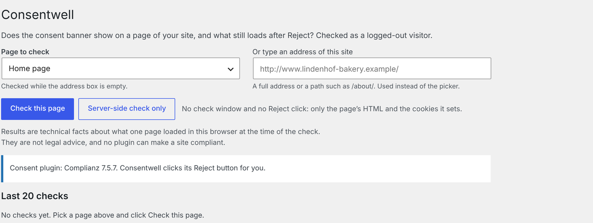
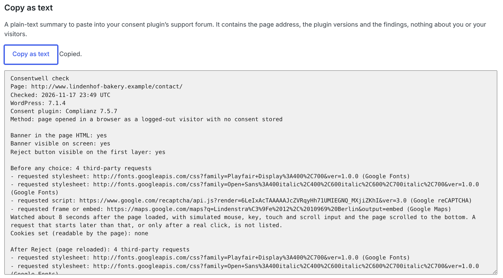
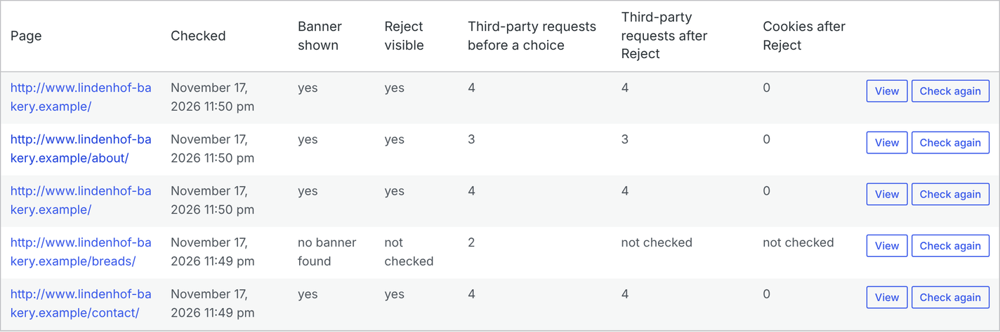
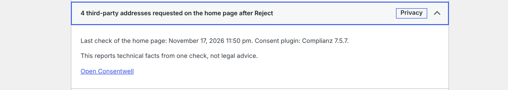
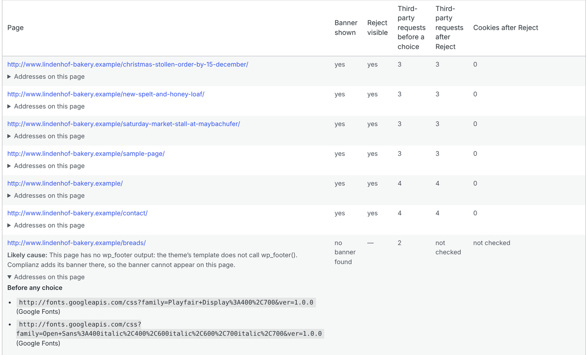
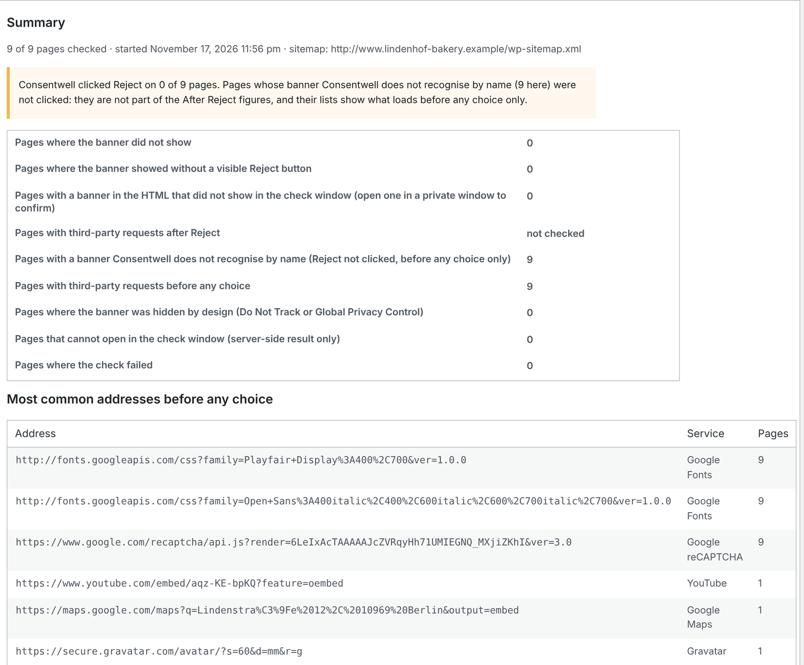

Consentwell quick start
Installing Consentwell, running a check, reading the result, and what Consentwell Pro adds. Each zip also has a readme.txt with answers to common questions. Back to the Consentwell product page.
Install
Requires WordPress 6.5 or later, PHP 7.4 or later, and an administrator account.
- Get the free plugin: consentwell.zip (version 1.0.3) from this site. Pro buyers get
consentwell-pro-download.zipfrom Polar, through the link in the order email; unzip it once and you haveconsentwell.zip,consentwell-pro.zipandINSTALL.txt. Do not unzip the plugin zips. - In WordPress, go to Plugins > Add Plugin (WordPress 6.5 calls it Add New Plugin), click Upload Plugin, choose
consentwell.zip, then Install Now and Activate Plugin. WordPress says “Plugin activated.” Consentwell adds no wizard, no redirect and no notice. It shows up in two places: a Check a page link under its name on the Plugins screen, and Tools > Consentwell. - Pro only, after the free plugin: the same with
consentwell-pro.zip. Pro needs the free plugin: if you upload Pro alone, the Plugins screen says “You cannot activate this plugin as it has unmet requirements” and WordPress will not activate it (the Activate Plugin link on the upload result leads to a WordPress error namingconsentwell). Install and activateconsentwell.zipfirst. Pro then adds Tools > Consentwell Pro.
On a phone the screenshots are wider than the screen: swipe each one sideways to read it →

Your first check
- Go to Tools > Consentwell. The note above the form names your consent plugin, for example “Consent plugin: Complianz 7.5.7. Consentwell clicks its Reject button for you.”
- Under Page to check, pick the home page, a page or a recent post, or type any address of this site under Or any address on this site.
- Click Check this page and keep the screen open. A check takes about 20 seconds: the page opens in a check window on this screen as a visitor who is not logged in and has no consent stored; Consentwell clicks Reject, reloads the page, and watches each load while it moves the mouse, presses a key, touches and scrolls to the bottom (at most 40 steps), until 6 seconds after the last input with nothing new loading.
- Read the result under the form. Each line is a fact with its exact address, so you can confirm it in your browser’s developer tools. Copy as text gives a plain-text summary for your consent plugin’s support forum.
Server-side check only fetches the page without a browser: faster, no Reject, and it also sees cookies set with HttpOnly. A page that forbids being shown in a frame (X-Frame-Options: DENY) gets this check automatically, and the screen says so.

Reading the result
- Banner in the page HTML / visible on screen / Reject button visible on the first layer. If the banner is in the HTML but not on screen, the result says what hides it (a class such as
cmplz-hidden,display: none, zero size, off screen), and a Likely cause box names the reason where it found one: nowp_footer()in the theme, a script error, the consent plugin’s own files answering an error, a style rule that hides the banner, a page-cache copy that differs, or Global Privacy Control with the consent plugin set to respect it (hidden by design; nothing is broken). - Before any choice and After Reject (page reloaded): the requests to other domains the page made while Consentwell watched it, each with type, full address and the service name where it is a well-known one, and the cookies the page can read (the consent plugin’s own record cookie is named, not listed). The seconds watched are printed under each list. A request that starts later, or only after a real click, is not listed.
- An empty After Reject list is not an all-clear. It means nothing to another domain was seen in the seconds watched.




Another consent plugin
Complianz and CookieYes are recognised by name. For another banner, Consentwell finds it when it is visible in the check window, has buttons labelled like a choice (Accept, Reject, Allow) and mentions cookies or consent, in the page or in an open shadow root. The screen then says “Your turn: click Reject in the check window below.” Click the banner’s Reject, and Consentwell continues by itself (or click I clicked Reject, continue). A banner in a closed shadow root is not found. Cookiebot’s dialog is looked for by its usual id but was not tested with a Cookiebot account. Pro cannot take a manual Reject: Pro clicks Reject on Complianz and CookieYes banners; on any other banner it lists what loads before any choice only.
Why does the banner show to my visitors but not in the check? The check window is a frame, and some banners do not show inside a frame: Cookie Notice & Compliance 3.1.19 stops its own script when a page is in one, and WPConsent 1.2.1 did not appear either (the plugins that were run are under Works with). Consentwell reports such a banner as in the page HTML but not shown in the check window, with a likely cause, lists what loads before any choice and does not click Reject. Open the page in a private window to see what visitors see. Pro counts these pages on their own summary line, not as “banner did not show”. A banner that only a script builds, and only for a top-level window, is found by neither the check window nor the server-side check; the result then says “No consent banner found” and suggests the same private window.

Consentwell Pro
- Go to Tools > Consentwell Pro and click Check every page. Pro reads your sitemap (the one
robots.txtdeclares, such as an SEO plugin’s, or WordPress’s ownwp-sitemap.xml) and checks each address in turn. Keep the screen open: a page takes about 20 seconds, so 120 pages take about 40 minutes. A run covers at most 5,000 addresses from at most 200 sitemap files, and the summary says so when your sitemap is bigger. - Pause at any time; Resume continues with the next page, also after you leave the screen and come back. Start over begins a new run.
- At the end: a summary, a table of every page (each page’s likely cause is under its address, and its addresses and cookie names fold out) and Download CSV. Pro clicks Reject on Complianz and CookieYes banners; on any other banner it lists what loads before any choice only. For those pages After Reject reads “not checked” (and so does the summary line when Reject was clicked on none), a notice says how many pages Reject was clicked on, and the summary lists what loads before any choice, with the most common addresses. The CSV has a “Reject clicked” column and the before-choice addresses.
- Run it again after you fix something: Since the previous run lists what is new or gone (pages, addresses after Reject, cookies, banners that stopped showing).


Updating. Neither plugin checks for updates by itself. For a new version, download the new zip (Pro: from your order email or order page) and use Plugins > Add Plugin > Upload Plugin, Install Now and Replace current with uploaded.
Deactivate or delete
Deactivating stops the check screens; nothing on your site was changed by a check. Deleting the free plugin also removes its stored results (the last 20 checks) and the review-line flag. WordPress will not let you deactivate the free plugin while Pro is active; deactivate Pro first.
Limits
- It does not change, fix or block anything on your site, shows no banner of its own and does not edit your consent plugin’s settings. No score, no legal references, no “compliant” verdict.
- One location, one browser: you see what a visitor from your own location sees in your own browser. Region-based banners may show other visitors something else. Ad blockers and privacy extensions in your browser can block requests or hide banners; use a profile without extensions.
- Listed is what the page requested while Consentwell watched. Not listed: a request that starts after the watching ended or only after a real click, one inside a frame (the frame itself is listed), files another domain’s stylesheet loads (the stylesheet is listed), and requests the browser cancelled.
- Consentwell moves the mouse and scrolls for you. A banner that records a choice on scroll would record one; in the tests, the Complianz and CookieYes banners were still on screen after the scrolling.
- Your own cookies for the site are set aside during a check and put back with their expiry, path and SameSite, also if you leave the screen halfway. A browser without the Cookie Store API (older Firefox and Safari, or a plain-http admin) cannot read expiry dates: there only cookies named like a consent record are set aside and come back as session cookies.
- Not checked: Accept and per-category choices, Google Consent Mode signals, pages behind a login. No schedules or e-mails; checks run when you click. No network-wide runs on multisite.
Privacy
Neither plugin contacts any server: no account, no licence check, no telemetry, no analytics. Results are stored in your site’s own database (the last 20 checks; for Pro, the current and the previous run). Cookie values are never stored or copied, only cookie names. During a check your site’s own pages are opened in the check window and fetched once by your own server; they load the third-party content they normally load for any visitor, which is what the check measures.
How we tested
| What | Result |
|---|---|
| PHPUnit, WordPress test suite, PHP 7.4.33 and 8.3.6 on WordPress 7.1.4 and 6.5.5 | 126 tests, 3,032 assertions, OK in all four runs |
| Browser tests in Chromium 141, WordPress 7.1.4, PHP 8.3.6, with Complianz 7.5.7, CookieYes 3.5.9 (local mode) and Cookie Notice & Compliance 3.1.19 | 48 passed |
| Six more consent plugins, each with its banner on: GDPR Cookie Compliance 5.3.1, CookieAdmin 1.2.6, SureCookie 1.8.1, Beautiful Cookie Consent Banner 4.10.0, WPConsent 1.2.1 and Cookie Notice & Compliance 3.1.19, through the free check, the server-side check and a three-page Pro run | 6 passed: where a visitor sees a banner, none was reported as “No consent banner found” or counted as “did not show” |
| Tests written to break it: a script-delay plugin at its default 5 seconds and in load-on-first-input mode, a tag fired 3 seconds after load (with Complianz and with CookieYes), a lazy map, banners in shadow roots or without “cookie” in their id, the admin’s own cookies, Global Privacy Control, a page-cache copy | 15 passed |
| WordPress.org Plugin Check 2.2.0, both plugins | 0 errors, 0 warnings |
| Both zips installed through Plugins > Add Plugin > Upload Plugin on a clean WordPress with debugging on, on the same four PHP and WordPress combinations | all four pass; Pro alone is refused with WordPress’s “unmet requirements”; Tools > Consentwell, Tools > Consentwell Pro and Site Health open; nothing from either plugin in the debug log |
| phpcs, WordPress-Extra, PHP 7.4 and later | 0 errors, 0 warnings |
Everything ran on Linux against version 1.0.3 of both plugins. Windows, macOS, MySQL servers other than MariaDB 10.11, Cookiebot banners and browsers other than Chromium were not tested. The images and the demo site are described under how the images were made.
How the images were made
Every image on both pages is a capture of Consentwell 1.0.3 in a real Chromium 141 window under a virtual display, on a local WordPress 7.1.4 (PHP’s built-in server, SQLite) with Complianz Free 7.5.7 set up through its own wizard with the default answers. The demo bakery site has a Contact Form 7 form with reCAPTCHA (Google’s published test keys), a YouTube embed, a Google Map and a theme that loads Google Fonts. The browser, the site and the plugins are real; only the replies of Google’s hosts came from a local stand-in server (the recording machine has no route to them), so every address in the images is one the site’s own pages requested, not a measurement of Google. Online, reCAPTCHA’s api.js also loads a file from gstatic.com. The “Our breads” page uses a template, written for the demo, that does not call wp_footer(). Consentwell Pro is installed only for the Pro images. The “other banner” image replaces Complianz with GDPR Cookie Compliance 5.3.1 from WordPress.org, its Reject button switched on in its own settings, and nothing else changed. The Cookie Notice & Compliance image does the same with Cookie Notice & Compliance 3.1.19 (Reject button on), in a window whose user agent is an ordinary visitor’s, because that plugin hides its banner from what it takes for a crawler. The CSV picture is the file the first Pro run downloaded, shown as a table by a script that changes no cell; it is not a screenshot of a spreadsheet program.
Support
Email support@ochrestack.com with your WordPress and PHP versions, your consent plugin and its version, the address you checked, and the text from Copy as text.